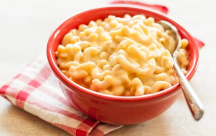

Stove Top Macaroni and Cheese
A lot of mac and cheese recipes out there just makes them extra fancy with a lot of ingredients. This is the base of the base, you can expand it as you like or keep it as is!
Description
Quick, easy, and tasty macaroni and cheese dish. All in a single pot.